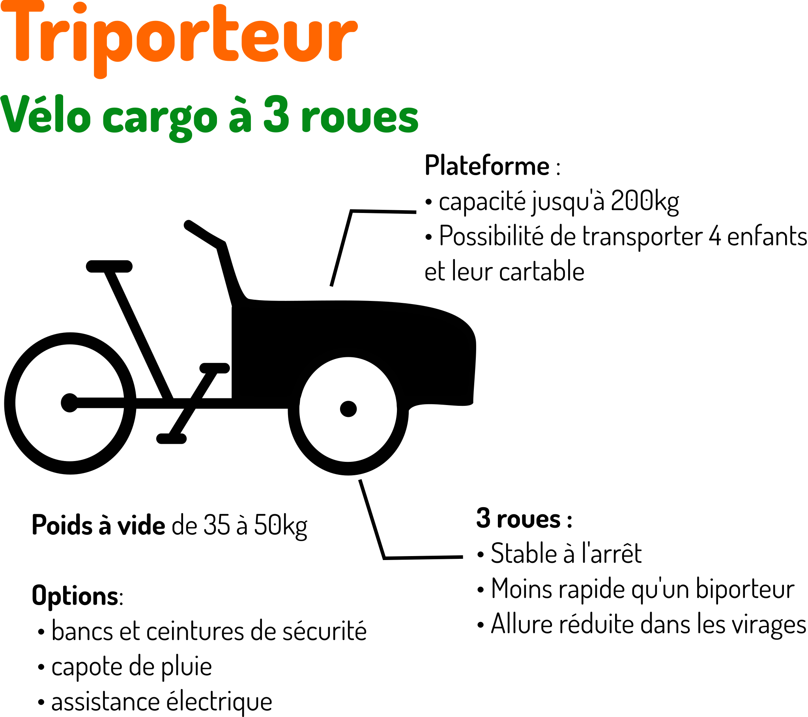
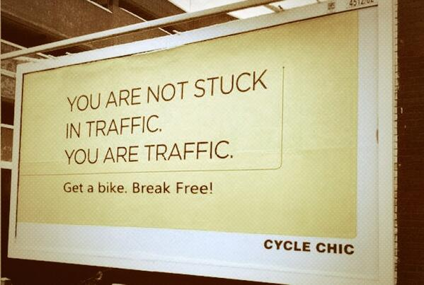
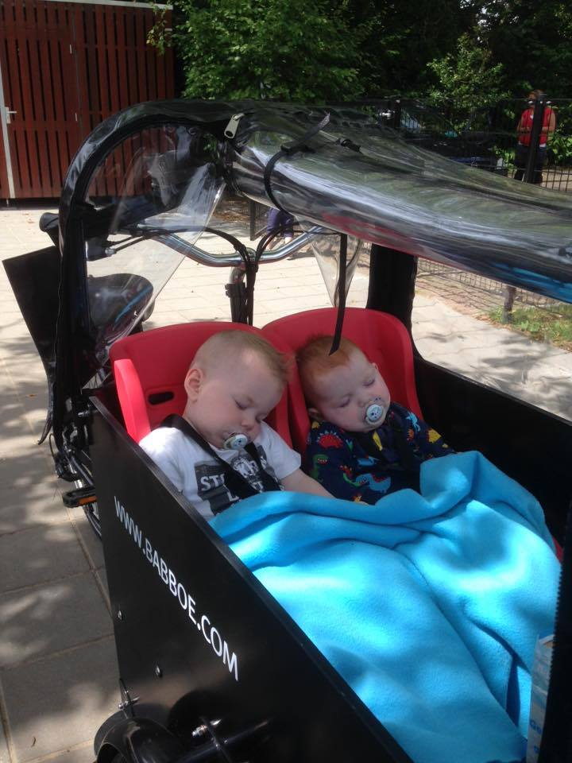

Définition
Le vélo cargo, vélo de fret ou cargo bike est un véhicule terrestre à deux ou trois roues dérivé de la bicyclette, destiné à transporter des charges plus importantes que sur un vélo classique.Wikipedia
Vivre avec un simple vélo?

Vivre avec un simple vélo?

Un vélo cargo, c'est la plupart du temps, une voiture en moins!
Un vélo cargo répond à la plupart des usages d'une voiture citadine.
2 principaux types de vélo
2 principaux types de vélo

Avantage financier!
Biporteur VS Voiture citadine sur 10 années
4 000 kilomètres/an
| Véhicule | coût sur 10 ans |
|---|---|
| Biporteur neuf avec assistance électrique | 5 400€ |
| Voiture citadine d'occasion (5 ans, 40000kms) | 17 000€ |
Donnez Donnez moi!
Le pouvoir d'achat!
Agrément
Chercher une place de parking à Nantes?
Agrément
- Incident voyageur
- ligne interrompue pour travaux
- déviation
- grève
Agrément
Un temps de trajet constant!

Agrément
Fiable (comme un vélo)Ecologique

Sauf pour Jean-Luc Moreau journaliste sur Auto-Moto !
Une vie plus gaie!

Ne pas passer sa vie dans les bouchons!
Le cargo n'est pas toujours un choix pertinent.
- Longs trajets (pas adapté si vous habitez à la campagne)
- Charge limitée
- Puissance de l'assistance électrique trop limitée pour les forts reliefs
Sortir de sa zone de confort!!!
Les Usage
Pour la famille!

Transporter ses enfants
Transporter ses enfants
Transporter ses enfants
Faire les courses

Usages Professionnels
- Artisans
- Assistantes maternelles
- Livreurs/Coursiers
- Vendeurs
Le challenge de la Métropole Nantaise
- Un réseau routier complètement saturé
- Une population qui croit: +100.000 d'ici 2030 (source INSEE)
Le challenge de la Métropole Nantaise
La voiture prend 80% de l'espace urbain!
Un vélo cargo en plus, c'est une voiture en moins!
Un vélo cargo en plus, c'est une voiture en moins!
Une ville plus agréable!
- Plus d'espace vert
- Des paysages plus estétiques
- Moins de pollution sonore
Amsterdam est la ville la plus dense d'Europe!
Et si agréable ...
Si agréable ...!

Et pourtant!
La même rue en 1970!
A Paris, posséder une voiture devient compliqué!
Un plan vélo avec 150 000 000€!Paris peut fonctionner sans voitures!Anne Hidalgo, Septembre 2015
L'hégémonie de la voiture individuelle a fait son temps!Anne Hidalgo, Avril 2015
La fin du diesel à Paris d'ici 2020Anne Hidalgo, Décembre 2014
A Bordeaux, posséder une voiture devient compliqué!
Limitation du forfait parking résident à un véhicule par foyer dans quelques quartiers!Infrastuctures
Infrastructure(Cargo) == Infrastructure(Vélo)
Infrastuctures
Merci les cyclo-contribuables
| type | coût/km | commentaires |
|---|---|---|
| Métro | 100 000 000€ | sans compter l'exploitation |
| tramway | 20 000 000€ | sans compter l'exploitation |
| route urbaine | 3 500 000€ | |
| Piste cyclable | 200 000€ |
Le vélo cargo: moyen de transport pertinent en ville
C'est un vélo, c'est donc rapide.
Le vrai du faux (27 mai 2015) - France Info
Jeunes parents
Evitez le marathon quotidien!
- Déposer un enfant à la crèche (700m)
- Déposer un enfant à l'école (800m)
- Aller au travail (4km)
- Récupérer les enfants
- Faire quelques courses
Parents: Evitez le marathon quotidien!
En transport en commun?
- Réseau souvent en étoile.
- Correspondances
- Temps de marche et d'attente
- Incertitude du temps de trajet (ajout d'une marge de sécurité)
Parents: Evitez le marathon quotidien!
En voiture?
- Installer les enfants, dégivrer l'hiver
- Il faut se garer (correctement: depuis juillet 2015 l'amende pour stationnement génant est à 135€!)
- Marcher
- Incertitude du temps de trajet (ajout d'une marge de sécurité)
Parents: Evitez le marathon quotidien!
En cargo!
- Le trajet est plus court (contre-sens cyclable ...)
- Pas de temps d'attente, pas de correspondances
- On se gare à proximité du lieu de dépose (moins de temps de marche)
- Pas d'imprévus (rue bloquée par un camion, bouchons, travaux etc.)